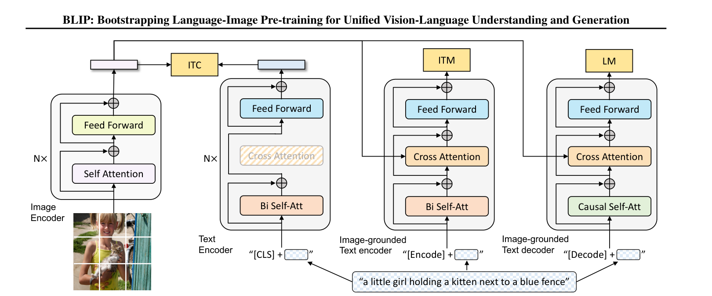
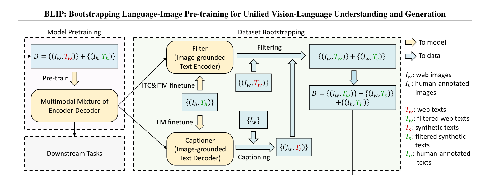
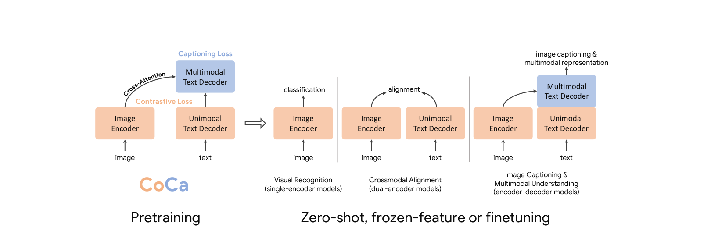
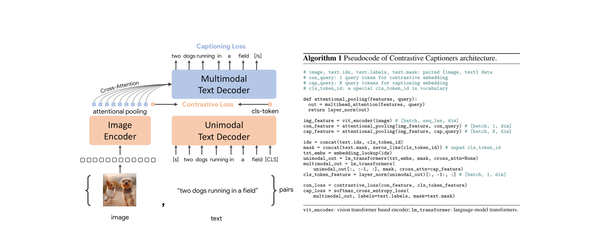
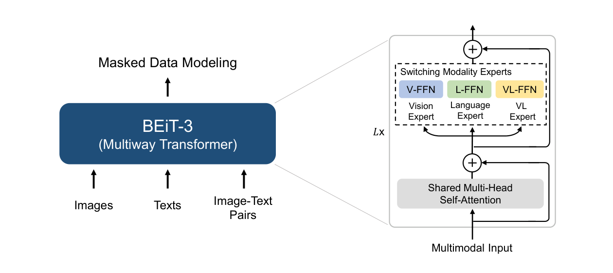
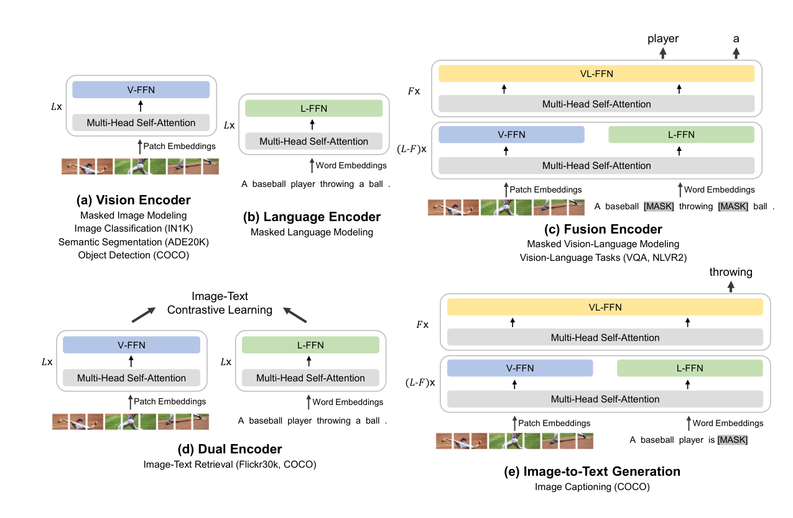

多模态论文串讲·下¶
目录¶
- 核心要点
- 1. BLIP: Bootstrapping Language-Image Pre-training for Unified Vision-Language Understanding and Generation
- 2. CoCa: Contrastive Captioners are Image-Text Foundation Models
- 3. BEiT-3: Image as a Foreign Language
- 4. FLIP: Fast Language-Image Prediction
- 5. 发展脉络总结
- 6. 未来方向
核心要点¶
- BLIP（Salesforce Research）提出 Mixture of Encoder and Decoder (MED) 统一框架，结合 ALBEF 与 VLMO 的设计思想，同时支持 Understanding 和 Generation 任务；其最大贡献是 Captioner + Filter 的数据 Bootstrapping 方法，能有效清洗噪声数据集并生成高质量合成数据。
- CoCa（Google Research）采用 Contrastive + Captioning 双损失训练，模型结构类似 ALBEF 但文本端统一使用 Decoder 以提升训练效率；在 ImageNet 上达到 90+ Top-1 准确率，视频动作识别等领域也取得 SOTA。
- BEiT-3（Microsoft Research）将图像视为"外语"（Imaglish），仅用 Masked Data Modeling 一个目标函数配合 Multi-Way Transformer（即 VLMO 的 MoME），在全部使用公开数据集的前提下，单模态与多模态任务均超越 CoCa、BLIP 等前作。
- FLIP（Meta/Facebook）将 MAE 的 masked token 丢弃策略引入 CLIP 结构，大幅降低序列长度从而加速训练，方法简洁但效果显著。
- 多模态学习正朝着真正 Unified Framework 演进：Language as Interface（MetaLM、PaLI）通过 Prompt 控制任务类型，Generalist Model（Unified-IO、UniPerceiver）追求单一模型无需修改即可处理所有任务。
1. BLIP: Bootstrapping Language-Image Pre-training for Unified Vision-Language Understanding and Generation¶

Figure 2: BLIP 预训练架构与目标函数1.1 动机¶

Figure 3: BLIP 数据 Bootstrapping 学习框架模型层面¶
- Encoder-only 模型（如 CLIP、ALBEF）：无法直接用于 Text Generation 任务（如 Image Captioning），因为缺少 Decoder，需要额外添加模块才能生成文本。
- Encoder-Decoder 模型（如 SimVLM）：虽然可以做生成任务，但没有统一框架，不能直接用于 Image-Text Retrieval 等理解任务。
- 核心问题：现有框架各有局限，如何提出一个 Unified Framework，用一个模型解决所有任务？BLIP 借鉴了 VLMO 的想法，设计了灵活的框架。
数据层面¶
- CLIP、ALBEF、SimVLM 等方法都在大规模网络爬取的 Noisy 数据集上预训练。
- 虽然数据量足够大时可以弥补噪声影响，但使用 Noisy 数据集预训练仍是 Suboptimal（非最优解）。
- 如何有效清洗 Noisy Dataset，让模型更好利用图文配对信息？BLIP 提出 Captioner + Filter 模块。
1.2 模型结构：MED (Mixture of Encoder and Decoder)¶
BLIP 的模型由四个部分组成：
(1) 视觉编码器¶
- 完整的 N 层 ViT 模型，标准的 Self-Attention + Feed-Forward。
(2) 三个文本模型（共享大部分参数）¶
| 文本模型 | 功能 | 关键组件 | 对应 Loss |
|---|---|---|---|
| Text Encoder | 纯文本理解/分类 | N 层 SA + FF（共享参数） | ITC Loss（与视觉特征对比） |
| Image-Grounded Text Encoder | 多模态编码 | SA + FF（共享）+ Cross-Attention（新学） | ITM Loss |
| Image-Grounded Text Decoder | 文本生成 | Causal Self-Attention（不共享）+ Cross-Attention + FF（共享） | LM Loss（Language Modeling） |
关键设计细节¶
- 参数共享：借鉴 VLMO，Self-Attention 层在不同文本模型间共享参数，因此不需要像 ALBEF 那样把文本编码器劈成 L 层和 N-L 层。
- Causal Self-Attention：Decoder 的第一层使用因果自注意力（mask 住后面的词，只用前面的信息推测后面），与 Bidirectional SA 不同，因此不能共享参数。除第一层外，后续的 Cross-Attention 和 Feed-Forward 仍与前面共享。
- Token 区别：Text Encoder 用
[CLS]Token，Image-Grounded Text Encoder 用[Encode]Token，Image-Grounded Text Decoder 用[Decode]Token。 - 目标函数：ITC（Image-Text Contrastive）、ITM（Image-Text Matching）、LM（Language Modeling，区别于 MLM 完形填空，LM 是自回归预测下一个词）。
- 训练代价高：每次 Training Iteration 中，图像端只需一次 forward，但文本端需三次 forward（分别通过三个模型）。
- 继承 ALBEF 技巧：ITC 时使用 Momentum Encoder 做 Knowledge Distillation；ITM 时利用 ITC 的 Similarity Score 做 Hard Negative Mining，用最难的负样本增加 Loss 有效性。
1.3 数据 Bootstrapping：Captioner + Filter¶
出发点¶
- 网络爬取数据集（如 CC12M）中图文对大多不匹配（Noisy）。
- 手工标注数据集（如 COCO）质量高但规模有限。
- 用 Noisy 数据预训练不是最优解。
Filter 模块¶
- 将预训练好的 MED（BLIP 模型）中的图像模型和两个文本模型（ITC + ITM）取出。
- 在 COCO（干净数据集）上快速微调，得到 Filter 模型。
- 用 Filter 计算图文相似度（尤其是 ITM 分数），删除不匹配的图文对。
- 结果：原始 Noisy 图文对 → 清洗后的高质量图文对。
Captioner 模块¶
- 将预训练好的 Image-Grounded Text Decoder 在 COCO 上微调，得到 Captioner。
- 给定任意图片，Captioner 生成新的描述性字幕（Synthetic Data）。
- 生成的文本质量有时甚至优于原始匹配的图文对。
Bootstrapping 流程（三阶段）¶
- Stage 1：用嘈杂数据集预训练 BLIP 模型。
- Stage 2：用 COCO 微调 Captioner 和 Filter，重新处理数据集，得到更大、质量更高的新数据集（包含 filter 后的原始数据 + 合成的新数据 + 手工标注数据）。
- Stage 3：用新数据集重新预训练 BLIP，获得显著提升。
重要特性¶
- 模型大小可解耦：Stage 2 生成数据时可以用更大的模型（如 BLIP Large），即使最终目标是训练小模型（如 ViT Base）。数据生成是独立的 pseudo-labeling 过程。
- 通用工具：BLIP Large 生成的数据可用于训练其他模型（VLMO、CoCa、BEiT-3 等）。
1.4 Captioner + Filter 实例展示¶
| 示例 | 原始网页文本 | BLIP 生成文本 | Filter 选择 |
|---|---|---|---|
| 自然风光 | "我家旁边有一个桥上"（模糊） | "日落时一群鸟飞过湖面"（精确描述日落、湖、鸟） | 选择生成文本 |
| 城堡 | "1180年建立的城堡，取代九世纪木头城堡"（具体但非视觉描述） | "很大的楼，很多窗户"（不够具体） | 选择原始文本 |
- Captioner 能对任意图片生成合理的描述性文本。
- Filter 能准确判断哪个文本与图像更匹配。
1.5 实验结果¶
消融实验（Table 1）¶
- 数据集增大（14M → 129M）：性能普遍提升。
- 模型增大（Base → Large）：性能普遍提升。
- Captioner/Filter 消融：
- 都不用 → 最差
- 只用 Filter → 有提升
- 只用 Captioner → 提升更显著（Data Diversity 对大模型更重要）
- 两者都用 → 最好
实际应用案例¶
- Stable Diffusion Pokemon Fine-tuning：Pokemon 数据集有图无文本，用 BLIP 零样本生成 Caption（如 "A drawing of a green Pokemon with red eyes"），成功 fine-tune Stable Diffusion 生成高质量 Pokemon 图像。
- LAION-COCO 600M 数据集：从 LAION-5B 英语子集中，用 BLIP 生成 40 个 caption → OpenAI ViT-Large Ranking 选 Top 5 → OpenAI ResNet-50 Re-ranking 选 Best 1 → T0 模型修复语法标点。所得数据集质量远高于原始 LAION-2B/5B。
1.6 BLIP 总结¶
- BLIP 的核心贡献不是模型框架本身，而是 Caption Filtering 方法的有效性和普适性。
- 适用于任何有图片/视频但缺少 Caption 的场景，包括医疗、遥感等非自然图像领域。
- 基于 LAION-COCO 等新数据集，可进一步研究 Language-Guided Detection/Segmentation 等任务。
2. CoCa: Contrastive Captioners are Image-Text Foundation Models¶

Figure 1: CoCa 概览（Contrastive Captioners)
Figure 2: CoCa 架构与训练目标详解2.1 概述¶
- 作者：Google Research
- 时间：2022年5月 arXiv，比 BLIP 晚四个月
- 核心思想：Contrastive Loss + Captioning Loss 双目标训练
- 亮点：数据集更大、模型更大，效果极其亮眼；ImageNet Top-1 达 90+；视频动作识别 K400/K600/K700 排名前三
2.2 模型结构¶
CoCa 是 ALBEF 的直接后续工作，模型布局高度相似：
- 左支：Image Encoder（ViT），输出 Token 序列
- 右支：Text Decoder（注意是 Decoder 而非 Encoder），被分为两部分：
- 前半部分：Unimodal Text Decoder，抽取纯文本特征
- 后半部分：Multimodal Text Decoder，通过 Cross-Attention 融合视觉特征
目标函数¶
- ITC Loss：图像 [CLS] Token 与文本 [CLS] Token 做对比学习
- Captioning Loss（= Language Modeling Loss = GPT Loss）：多模态特征用于自回归生成文本
与 ALBEF 的关键区别¶
- Attentional Pooling：图像端使用可学习的 Attentional Pooling（而非简单的 [CLS] Token），针对不同任务学到更好的特征。
- 文本端统一用 Decoder：整个文本分支都是 Decoder，从一开始就是 Causal Self-Attention。
- 只用两个 Loss（无 ITM）：去掉了 ITM Loss，只保留 ITC + Captioning。
2.3 训练效率优化¶
- ALBEF/VLMO 每个 Training Iteration 需要多次 forward（算多个 Loss），训练时间长。
- CoCa 设计为 一次 forward 同时计算 ITC 和 Captioning Loss：
- 文本输入从一开始就是 Causal mask 的
- Unimodal Text Decoder 输出的特征直接做 ITC
- Multimodal Text Decoder 输出的特征直接做 Captioning
- 在超大数据集（几十亿）上预训练时，mask 方式的影响 已不大。
2.4 Scale¶
- 模型：最大 2.1 Billion 参数（视觉/多模态领域非常大的模型）
- 数据：多模态数据集 + JFT-3B（Google 私有图像分类数据集转化为多模态格式），总计几十亿训练样本
- 远超之前所有工作的 scale
2.5 实验结果¶
多边形图（Spider/Radar Chart）¶
- 每个顶点代表一个数据集/任务（Image Captioning、VLU、ImageNet、Video、Retrieval 等）
- 对比对象：SimVLM（蓝色）、Florence（微软 Foundation Model）、各领域独立 SOTA（黄色圈）
- CoCa（紫色框）在所有任务上都超越了之前的 SOTA，且大部分是大幅度提升
- 这种画图方式迅速流行，BEiT-3 等后续工作纷纷采用
关键数值¶
- ImageNet Top-1：90.6 ~ 91
- Kinetics-400：89
- 所有多模态 benchmark 均为最优
2.6 CoCa 总结¶
- 本质是 SimVLM + ALBEF 的直接后续，方法简单但 scale 极大
- 证明了当模型和数据足够大时，简单的双损失框架就能取得极强性能
- 与 BLIP/VLMO 的参数共享思路殊途同归，最终拼的是数据和规模
3. BEiT-3: Image as a Foreign Language¶

Figure 2: BEiT-3 预训练概览3.1 核心思想：Big Convergence （大一统）¶

*Figure 3: BEiT-3 下游任务迁移 *BEiT-3 追求三个层面的统一： 1. 模型统一：Multi-Way Transformer（即 VLMO 的 MoME，改名受 Google Pathways 影响） 2. 目标函数统一：仅用 Masked Data Modeling 一个 Loss 3. Scale 统一：模型扩展到 Billion 级参数，数据集大幅扩展，但全部使用 Public Dataset（可复现）
核心理念¶
- 图像 = 外语（Imaglish），文本 = English，图文对 = Parallel Sentence
- 图像过 ViT Embedding 后变成 Token Sequence，与文本本质无区别
- 因此只需一个 Masked Data Modeling Loss 即可统一训练
3.2 为什么只用一个 Loss？¶
- 多 Loss 的问题：
- 训练速度慢（多次 forward）
- Loss Weight 调参复杂（3-4 个 Loss 的组合需要大量实验）
- Loss 之间可能互斥或互补，增加人工复杂度
- 不利于 Scale Up
- 单 Loss 的优势：
- 训练高效，易于扩展
- 无需调 Loss Weight
- CLIP 仅用对比学习就训练得很好，BEiT-3 仅用 Mask Modeling 也能训练得很好
- 越简单的方法，Scale 越好，越能应用
3.3 模型结构：Multi-Way Transformer¶
与 VLMO 完全一致： - Self-Attention 层：所有模态共享参数 - Feed-Forward Network：根据模态不同使用不同 Expert（Vision / Language / Vision-Language） - 推理时根据任务选择模型的不同部分
3.4 下游任务迁移（搭积木式）¶
| 任务类型 | 使用的模块 | 说明 |
|---|---|---|
| 图像分类/检测/分割 | Vision Encoder | 单独使用视觉分支 |
| NLP 任务 | Language Encoder | MLM 训练，BERT 能做的都能做 |
| VQA/VLR 等理解任务 | Vision + Language + VL Fusion Encoder | 多模态融合 |
| Image-Text Retrieval | Vision Encoder + Language Encoder（双塔） | 类似 CLIP，可用 ITC fine-tune |
| Image Captioning | Image-Grounded Text Encoder（mask 文本） | 预测被 mask 的词 |
3.5 实验结果¶
多边形图¶
- 新增对比对象：Flamingo（蓝色）
- BEiT-3（紫色）完全包住所有前作，包括 CoCa
- 每个任务提升都不小
关键数值（Table 1）¶
- ADE20K Segmentation：62.8 mIoU（当时 Top 1-2）
- COCO Object Detection：63.7 AP（后续已被刷到 65+）
- ImageNet Top-1：89.6（注：未使用私有数据，而 CoCa 用了 JFT-3B 私有数据）
- NLVR2 Visual Reasoning：比 CoCa 高 5.6 个点
3.6 关键启示¶
- 不是目标函数越多越好：Mask Modeling 一个 Loss 就够了，关键在于 Loss 之间是否互补。
- 不是数据越多越好：CoCa 用了数十倍于 BEiT-3 的数据量，但 BEiT-3 性能反超。数据质量比数量更关键。
- 全部使用公开数据集：学术界可复现，非常难能可贵。
- 方法本身无新意：是 BEiT、BEiT-2、VL-BEiT、VLMO 的集合体，核心贡献是"做大做强"，展示 Unified Framework 的性能上限。
3.7 引言推荐¶
- BEiT-3 引言写得极好，尤其第一段 "Big Convergence" 部分，适合所有对多模态学习感兴趣的研究者精读。
- 阐述了 Transformer 在多模态大一统中的核心地位：CNN 不适合跨模态，Transformer 天然适合多模态。
4. FLIP: Fast Language-Image Prediction¶
4.1 核心思想¶
- 将 MAE 的 masked token 丢弃策略引入 CLIP 结构
- 模型本身没有任何改变，仅在视觉端训练时丢弃被 mask 的 token
- 大幅降低 Sequence Length → 训练加速 → "Fast" Language-Image Prediction
4.2 方法细节¶
- 视觉端：与 MAE 一样，只将未被 mask 的 patch 送入 ViT
- 文本端：不变
- 对比学习 Loss：不变（仍是 CLIP 的 InfoNCE）
- 做了大量 Model/Data/Schedule Scaling 实验
4.3 评价¶
- 方法极其直接简洁，但从效果上看非常有效
- 体现了 MAE 思想的通用性
5. 发展脉络总结¶
ViT ──┬── Oscar/UNITER（Object Detection 太慢太贵）
│
├── ViLT（ViT Embedding 替代检测器，简化结构）── ICML 2021
│ │
│ └── VLMO（共享参数，Mixture of Experts）
│ │
│ ├── BLIP（MED + Caption Filter，ALBEF 原班人马）
│ │
│ └── BEiT-3（Multi-Way Transformer + 单一 MLM Loss）
│
├── CLIP（Dual Encoder，高效检索）── ICML 2021
│ │
│ └── FLIP（MAE masking + CLIP）
│
└── ALBEF（Fusion Encoder，综合三家长处）
│
├── SimVLM（Encoder-Decoder）
│ │
│ └── CoCa（Contrastive + Captioning，Google）
│
└── BEiT → BEiT-2 → VL-BEiT → BEiT-3
Masked Data Modeling 线：
BERT → BEIT（Patch）/ MAE（Pixel）→ VL-BEIT → BEiT-3
6. 未来方向¶
6.1 Language as Interface¶
- 代表工作：MetaLM（Microsoft）、PaLI（Google）
- 核心思想：模型永远是 Encoder-Decoder，输入是图像+文本，输出永远是文本。通过调整文本 Prompt 来控制任务类型（VQA、分类、检测等），无需修改模型结构。
- 这才是真正意义上的 Unified Framework。
6.2 Generalist Model（通才模型）¶
- 代表工作：Unified-IO、UniPerceiver（及其 MoE 版、V2 版）
- 核心思想：预训练和下游任务都用同一个模型，不需要 Task-Specific Head（分类头、检测头、分割头等）。
- 目前性能尚未达到炸裂水平，但预计很快会有突破性进展。